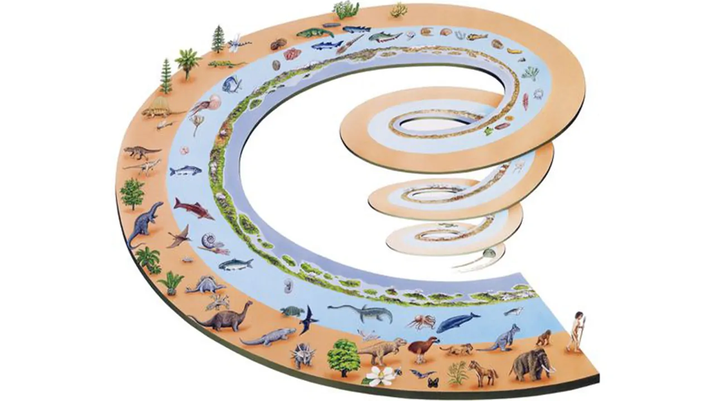

تاکسونومی در علوم زیستی به معنای طبقه بندی جانداران زنده و منقرض شده و دستهبندی بیولوژیکی آنها است. این واژه از ریشه یونانی تاکسو (ترتیب) و nomos (قانون) گرفته شده و بنابراین طبقهبندی روش و اصول گیاهشناسی و جانورشناسی سیستماتیک است و ترتیب انواع گیاهان و جانوران را در سلسله مراتب گروههای برتر و تابع مشخص میکند.
